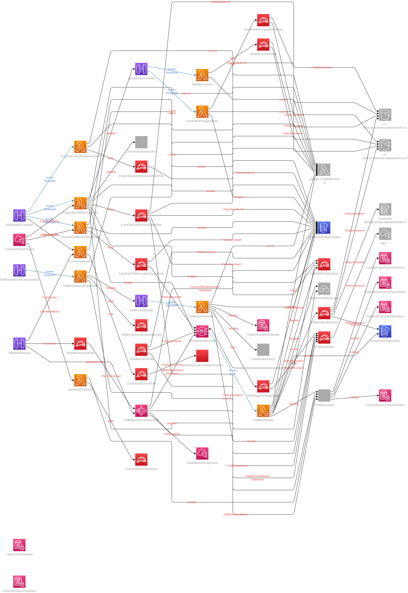
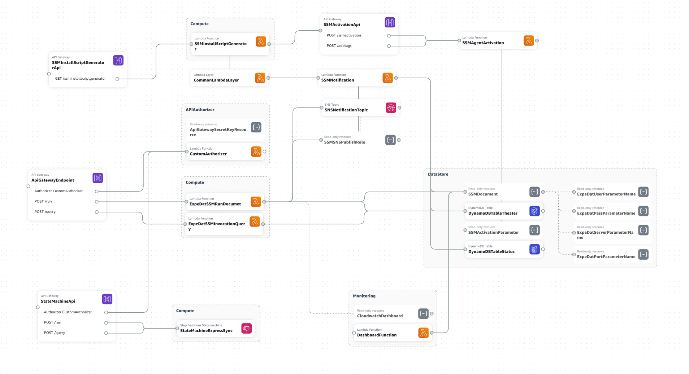

Cloudformation Template
Table of Contents
SAM Template Anatomy
This section describes the anatomy of the SAM template. The SAM template is a YAML file that defines the resources that are created by the template. The resources are defined by their type and properties. The properties are specific to the resource type. For example, the AWS::Serverless::Function resource type has properties that define the function code, runtime, handler, and other function properties.
The following example shows a YAML-formatted template fragment:
Transform: AWS::Serverless-2016-10-31 Globals: set of globals Description: String Metadata: template metadata Parameters: set of parameters Mappings: set of mappings Conditions: set of conditions Resources: set of resources Outputs: set of outputs
Architecture
The following diagram shows the architecture of the solution.
A more understandable diagram is shown below.
Globals
This section defines the global properties that are applied to all resources in the template. For example Tags, Tracing, etc.
1Globals:
2 Function:
3 Timeout: 300
4 MemorySize: 128
5 Tracing: Active
6 Tags:
7 Project: !Ref AWS::StackName
8 Environment: Prod
9 Owner: mondanthody.firos@primefocus.com
10 map-migrated: d-server-00c79yzv8q8cvz
11 Api:
12 TracingEnabled: true
Conditions
This section defines the conditions that are used to control the creation of resources in the template. The conditions are used to control the creation of resources based on the value of a parameter. For example, the following condition creates the Step function only if the DeployStepFunction parameter is set to true.
1Conditions:
2 DeployStepFunction: !Equals
3 - !Ref DeployStepFunction
4 - 'true'
5Parameters:
Parameters
This section defines the parameters that can be passed to the template. The parameters are used to configure the resources in the template.
1 ExpedatUser:
2 Type: String
3 Description: Expedat User
4 Default: username
5 ExpedatPass:
6 Type: String
7 Description: Expedat Password
8 Default: password
9 ExpedatServer:
10 Type: String
11 Description: Expedat Server
12 Default: server
13 ExpedatPort:
14 Type: String
15 Description: Expedat Port
16 Default: port
17 DeployStepFunction:
18 Type: String
19 Description: Deploy Step Function
20 Default: 'false'
21 NotificationEmailFrom:
22 Type: String
23 Description: Notification Email
24 Default: email
25 ExpedatServerId:
Resources
This section defines the resources that are created by the template. The resources are defined by their type and properties. The properties are specific to the resource type. For example, the AWS::Serverless::Function resource type has properties that define the function code, runtime, handler, and other function properties.
API Gateway
API Gateway Secret Key
This section defines the API Gateway Secret Key. The API Gateway Secret Key is used to secure the API Gateway endpoint. The API Gateway Secret Key is passed to the API Gateway as a header value. The API Gateway Secret Key is used to validate the request before the request is forwarded to the Lambda function.
1 Description: Expedat Server ID
2 Default: mi-08c5025fa198fe218
3 S3Bucket:
4 Type: String
5 Description: S3 Bucket
6 Default: mum-pr-dcinema-deployments-s3
7Resources:
8 ApiGatewaySecretKeyResource:
9 Type: AWS::SecretsManager::Secret
10 Properties:
11 Name: !Sub ${AWS::StackName}-ApiGatewaySecretKey-${AWS::Region}
12 Description: Random API Key for API Gateway Endpoint
13 Tags:
14 - Key: Project
15 Value: !Ref AWS::StackName
16 - Key: Environment
17 Value: Prod
18 - Key: Owner
19 Value: mondanthody.firos@primefocus.com
20 - Key: map-migrated
21 Value: d-server-00c79yzv8q8cvz
22 GenerateSecretString:
23 SecretStringTemplate: '{"api_key": "${rand}"}'
Main API Gateway Endpoint
This section defines the API Gateway. The API Gateway is used to expose the Lambda function as a REST API endpoint. The API Gateway is configured to use the API Gateway Secret Key to secure the API Gateway endpoint.
- Methods:
/run
/query
1 - logs:CreateLogStream
2 - logs:PutLogEvents
3 Resource: '*'
4 - Effect: Allow
5 Action:
6 - secretsmanager:GetSecretValue
7 Resource: !Sub ${ApiGatewaySecretKeyResource}*
8 - PolicyName: xraysdk
9 PolicyDocument:
10 Version: '2012-10-17'
11 Statement:
12 - Effect: Allow
13 Action:
14 - xray:PutTraceSegments
15 - xray:PutTelemetryRecords
16 Resource: '*'
17 ApiGatewayEndpoint:
18 Type: AWS::Serverless::Api
19 Properties:
20 StageName: Prod
21 TracingEnabled: true
22 Auth:
23 DefaultAuthorizer: CustomAuthorizer
24 Authorizers:
25 CustomAuthorizer:
26 FunctionPayloadType: REQUEST
27 FunctionArn: !GetAtt CustomAuthorizer.Arn
28 Identity:
29 Headers:
30 - x-api-key
31 ReauthorizeEvery: 0
32 Tags:
33 Project: !Ref AWS::StackName
34 Environment: Prod
35 Owner: mondanthody.firos@primefocus.com
36 DefinitionBody:
37 swagger: '2.0'
38 info:
39 version: '2018-11-29T23:30:18Z'
40 title: !Sub ${AWS::StackName}-ExpeDatSSM-API
41 x-amazon-apigateway-request-validators:
42 validateRequestBody:
43 validateRequestBody: true
44 validateRequestParameters: false
45 x-amazon-apigateway-request-validator: validateRequestBody
46 paths:
47 /run:
48 post:
49 x-amazon-apigateway-request-validator: validateRequestBody
50 consumes:
51 - application/json
52 produces:
53 - application/json
54 parameters:
55 - in: body
56 name: body
57 required: true
58 schema:
59 $ref: '#/definitions/RunRequestModel'
60 x-amazon-apigateway-integration:
61 uri: !Sub arn:aws:apigateway:${AWS::Region}:lambda:path/2015-03-31/functions/${ExpeDatSSMRunDocumet.Arn}/invocations
62 passthroughBehavior: when_no_match
63 httpMethod: POST
64 type: aws_proxy
65 responses: {}
66 security:
67 - CustomAuthorizer: []
68 /query:
69 post:
70 x-amazon-apigateway-request-validator: validateRequestBody
71 consumes:
72 - application/json
73 produces:
74 - application/json
75 parameters:
76 - in: body
77 name: body
78 required: true
79 schema:
80 $ref: '#/definitions/QueryRequestModel'
81 x-amazon-apigateway-integration:
82 uri: !Sub arn:aws:apigateway:${AWS::Region}:lambda:path/2015-03-31/functions/${ExpeDatSSMInvocationQuery.Arn}/invocations
83 passthroughBehavior: when_no_match
84 httpMethod: POST
85 type: aws_proxy
86 responses: {}
87 security:
88 - CustomAuthorizer: []
89 /cancel:
90 post:
91 x-amazon-apigateway-request-validator: validateRequestBody
92 consumes:
93 - application/json
94 produces:
95 - application/json
96 parameters:
97 - in: body
98 name: body
99 required: true
100 schema:
SSMActivationApi
This section defines the API Gateway. The API Gateway is used to expose the Lambda function as a REST API endpoint. The API Gateway is configured to use the API Gateway Secret Key to secure the API Gateway endpoint.
- Methods:
/ssmactivation
/addtags
1 Properties:
2 Path: /presignedurl
3 Method: post
4 RestApiId: !Ref ApiGatewayS3Verify
5 GeneratedPresignedURLRole:
6 Type: AWS::IAM::Role
7 Properties:
8 Tags:
9 - Key: Project
10 Value: !Ref AWS::StackName
11 - Key: Environment
12 Value: Prod
13 - Key: Owner
14 Value: mondanthody.firos@primefocus.com
15 - Key: map-migrated
16 Value: d-server-00c79yzv8q8cvz
17 AssumeRolePolicyDocument:
18 Version: '2012-10-17'
19 Statement:
20 - Effect: Allow
21 Principal:
22 Service:
23 - lambda.amazonaws.com
24 Action:
25 - sts:AssumeRole
26 Policies:
27 - PolicyName: GeneratedPresignedURLPolicy
28 PolicyDocument:
29 Version: '2012-10-17'
30 Statement:
SSMInstallScriptGeneratorApi
This section defines the API Gateway. The API Gateway is used to expose the Lambda function as a REST API endpoint.
- Methods:
/ssminstallscriptgenerator
1 - logs:CreateLogGroup
2 - logs:CreateLogStream
3 - logs:PutLogEvents
4 Resource: '*'
5 - Effect: Allow
6 Action:
7 - xray:PutTraceSegments
8 - xray:PutTelemetryRecords
9 Resource: '*'
10 ValidateTransfer:
11 Type: AWS::Serverless::Function
12 Properties:
13 Runtime: python3.8
14 CodeUri: ./functions/ValidateTransfer/
15 Handler: index.lambda_handler
16 Description: This function will validate the transfer of the files from the source to the destination
17 Role: !GetAtt ValidateTransferRole.Arn
18 Layers:
19 - !Sub arn:aws:lambda:${AWS::Region}:017000801446:layer:AWSLambdaPowertoolsPythonV2:19
20 Environment:
StateMachineApi
This section defines the API Gateway. The API Gateway is used to expose the Lambda function as a REST API endpoint. This is optional, depends on deployment of step function.
- Methods:
/run
/query
1 type: String
2 description: Server IP
3 default: mi-08c5025fa198fe218
4 GenerateHash:
5 type: String
6 description: Code
7 default: "1234"
8 APIURL:
9 type: String
10 description: API URL
11 default: "https://api.expedat.com/api/v1/ServerHash"
12 Date:
13 type: String
14 description: Date
15 default: "2021-09-01"
16 mainSteps:
17 - name: GenerateServerHash
18 action: aws:runShellScript
19 inputs:
20 runCommand:
21 - "#!/bin/sh"
22 - "set -e"
23 - 'date="$(date +%Y%m%d-%H%M%S)"'
24 - 'export GenerateHash="{{GenerateHash}}"'
25 - "if python3 -c \"$(echo $GenerateHash | base64 -d)\" {{SourcePath}} {{SourcePath}} Server {{APIURL}} {{Date}}; then"
26 - ' echo "Server hash generated successfully"'
27 - 'else'
28 - ' echo "Server hash generation failed"'
29 - ' exit 1'
30 - 'fi'
31
32
33
34 DocumentType: Command
35 DocumentFormat: YAML
36
37
38 ExpeDatUserParameterName:
39 Type: AWS::SSM::Parameter
40 Properties:
41 Tags:
42 Project: !Ref AWS::StackName
43 Environment: Prod
44 Owner: mondanthody.firos@primefocus.com
45 Usage: Username
46 map-migrated: d-server-00c79yzv8q8cvz
47 Name: !Sub /${AWS::StackName}/expedat/username
48 Type: String
49 Value: !Ref ExpedatUser
50 Description: Expedat User
51 Tier: Standard
52 ExpeDatPassParameterName:
53 Type: AWS::SSM::Parameter
54 Properties:
55 Tags:
56 Project: !Ref AWS::StackName
57 Environment: Prod
58 Owner: mondanthody.firos@primefocus.com
59 Usage: Password
60 map-migrated: d-server-00c79yzv8q8cvz
61 Name: !Sub /${AWS::StackName}/expedat/password
62 Type: String
63 Value: !Ref ExpedatPass
64 Description: Expedat Password
65 Tier: Standard
66 ExpeDatServerParameterName:
67 Type: AWS::SSM::Parameter
68 Properties:
69 Tags:
70 Project: !Ref AWS::StackName
71 Environment: Prod
72 Owner: mondanthody.firos@primefocus.com
73 Usage: Server
74 map-migrated: d-server-00c79yzv8q8cvz
75 Name: !Sub /${AWS::StackName}/expedat/server
76 Type: String
77 Value: !Ref ExpedatServer
78 Description: Expedat Server
79 Tier: Standard
80 ExpeDatPortParameterName:
Lambda Functions
This section defines the Lambda function. The Lambda function is used to run the SSM Run document and query the SSM Run document status. Act as Custom Authorizer for API Gateway. Dashboard Function to get the status of the SSM Run document. SSM Agent Activation Function to activate the SSM Agent on the managed instance. SSM Install Script Generator Function to generate the SSM Install Script.
ExpeDatSSMRunDocumet
This section defines the Lambda function that runs the SSM Run document. The Lambda function is configured to use the API Gateway Secret Key to validate the request.
Note
CodeUri below is set to a location of ExpeDatSSMRunDocumet, see ExpeDatSSMRunDocumet Documentation for more information.
1 $ref: '#/definitions/CancelRequestModel'
2 x-amazon-apigateway-integration:
3 uri: !Sub arn:aws:apigateway:${AWS::Region}:lambda:path/2015-03-31/functions/${ExpeDatCancelRunDocument.Arn}/invocations
4 passthroughBehavior: when_no_match
5 httpMethod: POST
6 type: aws_proxy
7 responses: {}
8 security:
9 - CustomAuthorizer: []
10 securityDefinitions:
11 CustomAuthorizer:
12 type: apiKey
13 name: x-api-key
14 in: header
15 definitions:
16 QueryRequestModel:
17 type: object
18 properties:
19 ClientId:
20 type: string
21 JobId:
22 type: string
23 required:
24 - ClientId
25 - JobId
26 RunRequestModel:
27 type: object
28 properties:
29 ClientId:
ExpeDatSSMInvocationQuery
This section defines the Lambda function that queries the SSM Run document status. The Lambda function is configured to use the API Gateway Secret Key to validate the request.
Note
CodeUri below is set to a location of ExpeDatSSMInvocationQuery, see ExpeDatSSMInvocationQuery Documentation for more information.
1 type: string
2 SourcePath:
3 type: string
4 DestinationPath:
5 type: string
6 required:
7 - ClientId
8 - SourcePath
9 CancelRequestModel:
10 type: object
11 properties:
12 ClientId:
13 type: string
14 JobId:
15 type: string
16 required:
17 - ClientId
18 - JobId
19 ExpeDatSSMRunDocumet:
20 Type: AWS::Serverless::Function
21 Properties:
22 Runtime: python3.8
23 CodeUri: ./functions/ExpeDatSSMRunDocumet/
24 Handler: index.lambda_handler
25 Description: This function will run a SSM Document on Client machines to copy files from a source to a destination using Expedat
SSMAgentActivation
This section defines the Lambda function that activates the SSM Agent on the managed instance. The Lambda function is configured to use the API Gateway Secret Key to validate the request.
Note
CodeUri below is set to a location of SSMAgentActivation, see SSMAgentActivation Documentation for more information.
1 Role: !GetAtt ExpeDatSSMRunDocumetRole.Arn
2 Layers:
3 - !Sub arn:aws:lambda:${AWS::Region}:017000801446:layer:AWSLambdaPowertoolsPythonV2:19
4 Environment:
5 Variables:
6 DYNAMODB_TABLE: !Ref DynamoDBTableTheater
7 SSM_DOCUMENT_NAME: !Ref SSMDocument
8 SNS_TOPIC: !Ref SNSNotificationTopic
9 POWERTOOLS_SERVICE_NAME: ExpeDatSSMRunDocumet
10 POWERTOOLS_METRICS_NAMESPACE: ExpeDatSSMRunDocumet
11 LOG_LEVEL: INFO
12 DEFAULT_PATH: /tmp/DCinema/downloads/
13 SSM_SERVICE_ROLE_ARN: !GetAtt SSMSNSPublishRole.Arn
14 HASH_DOCUMENT: !Ref ServerHashGenerator
15 SERVER_ID: !Ref ExpedatServerId
16 S3_BUCKET: mum-pr-dcinema-deployments-s3
17 API_GATEWAY_ENDPOINT: !Sub https://${ApiGatewayS3Verify}.execute-api.${AWS::Region}.amazonaws.com/Prod
18 Events:
19 ApiGatewayEndpoint:
20 Type: Api
21 Properties:
22 Path: /run
23 Method: post
24 RestApiId: !Ref ApiGatewayEndpoint
25 Auth:
26 Authorizer: CustomAuthorizer
27 ExpeDatCancelRunDocument:
28 Type: AWS::Serverless::Function
29 Properties:
30 Runtime: python3.8
31 CodeUri: ./functions/ExpeDatCancelRunDocument/
32 Handler: index.lambda_handler
33 Description: This function will cancel a SSM Document on Client machines
SSMNotification
This section defines the Lambda function that sends the SSM Run document status notification using SES. The Lambda function is configured to use the API Gateway Secret Key to validate the request.
Note
CodeUri below is set to a location of SSMNotification, see SSMNotification Documentation for more information.
1 Role: !GetAtt ExpeDatCancelRunDocumentRole.Arn
2 Layers:
3 - !Sub arn:aws:lambda:${AWS::Region}:017000801446:layer:AWSLambdaPowertoolsPythonV2:19
4 Environment:
5 Variables:
6 DYNAMODB_TABLE: !Ref DynamoDBTableTheater
7 POWERTOOLS_SERVICE_NAME: ExpeDatCancelRunDocument
8 POWERTOOLS_METRICS_NAMESPACE: ExpeDatCancelRunDocument
9 LOG_LEVEL: INFO
10
11 Events:
12 ApiGatewayEndpoint:
13 Type: Api
14 Properties:
15 Path: /cancel
16 Method: post
17 RestApiId: !Ref ApiGatewayEndpoint
18 Auth:
19 Authorizer: CustomAuthorizer
20 ExpeDatCancelRunDocumentRole:
21 Type: AWS::IAM::Role
22 Properties:
23 RoleName: !Sub ${AWS::StackName}-ExpeDatCancelRunDocumentRole
24 Tags:
25 - Key: Project
26 Value: !Ref AWS::StackName
SSMInstallScriptGenerator
This section defines the Lambda function that generates the SSM Install Script. This is a public API without any authentication.
Note
CodeUri below is set to a location of SSMInstallScriptGenerator, see SSMInstallScriptGenerator Documentation for more information.
1 - Effect: Allow
2 Action:
3 - s3:PutObject
4 - s3:PutObjectAcl
5 - s3:PutObjectTagging
6 - s3:PutObjectVersionAcl
7 - s3:PutObjectVersionTagging
8 Resource: !Sub arn:aws:s3:::mum-pr-dcinema-deployments-s3/*
9 - Effect: Allow
10 Action:
11 - s3:ListBucket
12 Resource: !Sub arn:aws:s3:::mum-pr-dcinema-deployments-s3
13 - Effect: Allow
14 Action:
15 - s3:GetObject
16 - s3:GetObjectAcl
17 - s3:GetObjectTagging
18 - s3:GetObjectVersion
19 - s3:GetObjectVersionAcl
20 - s3:GetObjectVersionTagging
21 Resource: !Sub arn:aws:s3:::mum-pr-dcinema-deployments-s3/*
22 - Effect: Allow
23 Action:
24 - cloudwatch:PutMetricData
DashboardFunction
This section defines the Lambda function that gets the status of the SSM Run document, cost and usage to be used by Cloudwatch Dashboard.
Note
CodeUri below is set to a location of DashboardFunction, see DashboardFunction Documentation for more information.
1 - Key: Project
2 Value: !Ref AWS::StackName
3 - Key: Environment
4 Value: Prod
5 - Key: Owner
6 Value: mondanthody.firos@primefocus.com
7 - Key: map-migrated
8 Value: d-server-00c79yzv8q8cvz
9 AssumeRolePolicyDocument:
10 Version: '2012-10-17'
11 Statement:
12 - Effect: Allow
SNS Topic
SNSNotificationTopic
This section defines the SNS Topic. The SNS Topic is used to send the SSM Run document status notification.
1 Properties:
2 Path: /ssminstallscriptgenerator
3 Method: get
4 RestApiId: !Ref SSMInstallScriptGeneratorApi
5 SSMInstallScriptGeneratorApi:
6 Type: AWS::Serverless::Api
7 Properties:
8 StageName: Prod
9 DefinitionBody:
10 swagger: '2.0'
11 info:
12 version: '2018-11-29T18:24:29Z'
13 title: !Sub ${AWS::StackName}-SSMInstallScriptGenerator
14 paths:
15 /ssminstallscriptgenerator:
16 get:
17 x-amazon-apigateway-integration:
SSM Document
SSMDocument
This section defines the SSM Document. The SSM Document is used to run the SSM Run document.
1 PolicyDocument:
2 Version: 2012-10-17
3 Statement:
4 - Effect: Allow
5 Action:
6 - logs:CreateLogGroup
7 - logs:CreateLogStream
8 - logs:PutLogEvents
9 Resource: '*'
10 CommonLambdaLayer:
11 Type: AWS::Serverless::LayerVersion
12 Properties:
13 CompatibleRuntimes:
14 - python3.8
15 ContentUri: ./lambdaLayer
16 Description: SSM Layer with Jinja2 package
17 LicenseInfo: MIT
18 RetentionPolicy: Retain
19 LayerName: !Sub ${AWS::StackName}-CommonLambdaLayer
20 Metadata:
21 BuildMethod: python3.8
22 ExpeDatSSMRunDocumetRole:
23 Type: AWS::IAM::Role
24 Properties:
25 Tags:
26 - Key: Project
27 Value: !Ref AWS::StackName
28 - Key: Environment
29 Value: Prod
30 - Key: Owner
31 Value: mondanthody.firos@primefocus.com
32 - Key: map-migrated
33 Value: d-server-00c79yzv8q8cvz
34 AssumeRolePolicyDocument:
35 Version: '2012-10-17'
36 Statement:
37 - Effect: Allow
38 Principal:
39 Service:
40 - lambda.amazonaws.com
41 Action:
42 - sts:AssumeRole
43 Policies:
44 - PolicyName: !Sub ${AWS::StackName}-DynamoDBPolicy
45 PolicyDocument:
46 Version: '2012-10-17'
47 Statement:
48 - Effect: Allow
49 Action:
50 - dynamodb:GetItem
51 - dynamodb:Scan
52 - dynamodb:Query
53 - dynamodb:BatchGetItem
54 Resource: !GetAtt DynamoDBTableTheater.Arn
55 - PolicyName: !Sub ${AWS::StackName}-SSMRunDocumentPolicy
56 PolicyDocument:
57 Version: '2012-10-17'
58 Statement:
59 - Effect: Allow
SSM Parameters Store
ExpeDatUserParameterName
This section defines the SSM Parameter Store. The SSM Parameter Store is used to store the SSM Run document user parameter name.
1 Action:
2 - ssm:DescribeInstanceInformation
3 - ssm:SendCommand
4 - ssm:ListCommands
5 - ssm:ListCommandInvocations
6 - ssm:CancelCommand
7 - ssm:GetCommandInvocation
8 - ssm:GetConnectionStatus
9 Resource: '*'
10 - PolicyName: !Sub ${AWS::StackName}-CloudWatchLogsPolicy
11 PolicyDocument:
12 Version: '2012-10-17'
13 Statement:
14 - Effect: Allow
ExpeDatPassParameterName
This section defines the SSM Parameter Store. The SSM Parameter Store is used to store the SSM Run document password parameter name.
1 Action:
2 - logs:CreateLogGroup
3 - logs:CreateLogStream
4 - logs:PutLogEvents
5 Resource: '*'
6 - PolicyName: !Sub ${AWS::StackName}-IAMPassRolePolicy
7 PolicyDocument:
8 Version: '2012-10-17'
9 Statement:
10 - Effect: Allow
11 Action:
12 - iam:PassRole
13 Resource: !GetAtt SSMSNSPublishRole.Arn
14 - PolicyName: !Sub ${AWS::StackName}-IAMPassRolePolicy2
ExpeDatServerParameterName
This section defines the SSM Parameter Store. The SSM Parameter Store is used to store the SSM Run document server parameter name.
1 PolicyDocument:
2 Version: '2012-10-17'
3 Statement:
4 - Effect: Allow
5 Action:
6 - iam:PassRole
7 Resource: !GetAtt SSMAgentRole.Arn
8 - PolicyName: !Sub ${AWS::StackName}-XRayPolicy
9 PolicyDocument:
10 Version: '2012-10-17'
11 Statement:
12 - Effect: Allow
13 Action:
14 - xray:PutTraceSegments
SSMActivationParameter
This section defines the SSM Parameter Store. The SSM Parameter Store is used to store the SSM Activation Code and ID.
1 - xray:PutTelemetryRecords
2 Resource: '*'
3 - PolicyName: !Sub ${AWS::StackName}-S3PolicyGetHead
4 PolicyDocument:
5 Version: '2012-10-17'
6 Statement:
7 - Effect: Allow
8 Action:
9 - s3:ListBucket
10 Resource: !Sub arn:aws:s3:::mum-pr-dcinema-deployments-s3
11 - Effect: Allow
12 Action:
13 - s3:GetObject
14 - s3:GetObjectAcl
DynamoDB Table
DynamoDBTableTheater
This section defines the DynamoDB Table. The DynamoDB Table is used to store the theater box metadata.
1 Value: d-server-00c79yzv8q8cvz
2 AssumeRolePolicyDocument:
3 Version: '2012-10-17'
4 Statement:
5 - Effect: Allow
6 Principal:
7 Service:
8 - lambda.amazonaws.com
9 Action:
10 - sts:AssumeRole
11 Policies:
12 - PolicyName: !Sub ${AWS::StackName}-DynamoDBPolicy
13 PolicyDocument:
14 Version: '2012-10-17'
15 Statement:
16 - Effect: Allow
17 Action:
18 - dynamodb:GetItem
19 - dynamodb:Scan
20 - dynamodb:Query
21 - dynamodb:BatchGetItem
22 Resource: !GetAtt DynamoDBTableTheater.Arn
23 - PolicyName: !Sub ${AWS::StackName}-SSMRunDocumentPolicy
24 PolicyDocument:
25 Version: '2012-10-17'
26 Statement:
27 - Effect: Allow
28 Action:
29 - ssm:DescribeInstanceInformation
30 - ec2:DescribeInstances
31 - ssm:SendCommand
DynamoDBTableStatus
This section defines the DynamoDB Table. The DynamoDB Table is used to store the SSM Run document status.
1 - ssm:ListCommands
2 - ssm:ListCommandInvocations
3 - ssm:CancelCommand
4 - ssm:GetCommandInvocation
5 Resource: '*'
6 - PolicyName: !Sub ${AWS::StackName}-CloudWatchLogsPolicy
7 PolicyDocument:
8 Version: '2012-10-17'
9 Statement:
10 - Effect: Allow
11 Action:
12 - logs:CreateLogGroup
13 - logs:CreateLogStream
14 - logs:PutLogEvents
15 Resource: '*'
16 - PolicyName: !Sub ${AWS::StackName}-SNSPublishPolicy
17 PolicyDocument:
18 Version: '2012-10-17'
19 Statement:
20 - Effect: Allow
21 Action:
22 - sns:Publish
23 Resource: !Ref SNSNotificationTopic
24 - PolicyName: !Sub ${AWS::StackName}-XRayPolicy
25 PolicyDocument:
26 Version: '2012-10-17'
27 Statement:
28 - Effect: Allow
29 Action:
30 - xray:PutTraceSegments
31 - xray:PutTelemetryRecords
32 Resource: '*'
33 SSMAgentActivationRole:
34 Type: AWS::IAM::Role
35 Properties:
36 Tags:
Cloudwatch Dashboard
CloudwatchDashboard
This section defines the Cloudwatch Dashboard. The Cloudwatch Dashboard is used to display the SSM Run document status, cost and usage. API Gateway, Lambda, DynamoDB and SNS metrics are also displayed.
1 - Key: Project
2 Value: !Ref AWS::StackName
3 - Key: Environment
4 Value: Prod
5 - Key: Owner
6 Value: mondanthody.firos@primefocus.com
7 - Key: map-migrated
8 Value: d-server-00c79yzv8q8cvz
9 AssumeRolePolicyDocument:
10 Version: '2012-10-17'
11 Statement:
12 - Effect: Allow
13 Principal:
14 Service:
15 - ssm.amazonaws.com
16 Action:
17 - sts:AssumeRole
18 Policies:
19 - PolicyName: !Sub ${AWS::StackName}-SSMRunDocumentPolicy
20 PolicyDocument:
21 Version: '2012-10-17'
22 Statement:
23 - Effect: Allow
24 Action:
25 - ssm:DescribeInstanceInformation
26 - ssm:DescribeAssociation
27 - ssm:GetDeployablePatchSnapshotForInstance
28 - ssm:GetDocument
29 - ssm:DescribeDocument
30 - ssm:GetManifest
31 - ssm:GetParameter
32 - ssm:GetParameters
33 - ssm:PutParameter
34 - ssm:ListAssociations
35 - ssm:ListInstanceAssociations
36 - ssm:PutInventory
37 - ssm:PutComplianceItems
38 - ssm:PutConfigurePackageResult
39 - ssm:UpdateAssociationStatus
40 - ssm:UpdateInstanceAssociationStatus
41 - ssm:UpdateInstanceInformation
42 Resource: '*'
43 - Effect: Allow
44 Action:
45 - ssmmessages:CreateControlChannel
46 - ssmmessages:CreateDataChannel
47 - ssmmessages:OpenControlChannel
48 - ssmmessages:OpenDataChannel
49 Resource: '*'
50 - Effect: Allow
51 Action:
52 - ec2messages:AcknowledgeMessage
53 - ec2messages:DeleteMessage
54 - ec2messages:FailMessage
55 - ec2messages:GetEndpoint
56 - ec2messages:GetMessages
57 - ec2messages:SendReply
58 Resource: '*'
59 - PolicyName: !Sub ${AWS::StackName}-CloudWatchLogsPolicy
60 PolicyDocument:
61 Version: '2012-10-17'
62 Statement:
63 - Effect: Allow
64 Action:
65 - logs:CreateLogGroup
66 - logs:CreateLogStream
67 - logs:PutLogEvents
68 - logs:DescribeLogGroups
69 - logs:DescribeLogStreams
70 Resource: arn:aws:logs:*:*:*
71 # CloudWatchAgentServerPolicy
72 - PolicyName: !Sub ${AWS::StackName}-CloudWatchAgentServerPolicy
73 PolicyDocument:
74 Version: '2012-10-17'
75 Statement:
76 - Effect: Allow
77 Action:
78 - cloudwatch:PutMetricData
79 - ec2:DescribeTags
80 - ec2:DescribeInstances
81 - ec2:DescribeVolumes
82 Resource: '*'
83 SNSNotificationTopic:
84 Type: AWS::SNS::Topic
85 Properties:
86 TopicName: !Sub ${AWS::StackName}-ExpeDatSSMRunDocument-NOTIFICATION
87 DisplayName: !Sub ${AWS::StackName}-ExpeDatSSMRunDocument
88 Tags:
89 - Key: Project
90 Value: !Ref AWS::StackName
91 - Key: Environment
92 Value: Prod
93 - Key: Owner
94 Value: mondanthody.firos@primefocus.com
95 - Key: map-migrated
96 Value: d-server-00c79yzv8q8cvz
97 Subscription:
98 - Endpoint: mondanthody.firos@primefocus.com
99 Protocol: email
100 SSMSNSPublishRole:
101 Type: AWS::IAM::Role
102 Properties:
103 Tags:
104 - Key: Project
105 Value: !Ref AWS::StackName
106 - Key: Environment
107 Value: Prod
108 - Key: Owner
109 Value: mondanthody.firos@primefocus.com
110 - Key: map-migrated
111 Value: d-server-00c79yzv8q8cvz
112 AssumeRolePolicyDocument:
113 Version: '2012-10-17'
114 Statement:
115 - Effect: Allow
116 Principal:
117 Service:
118 - ssm.amazonaws.com
119 Action:
120 - sts:AssumeRole
121 Policies:
122 - PolicyName: !Sub ${AWS::StackName}-SSMSNSPublishPolicy
123 PolicyDocument:
124 Version: '2012-10-17'
125 Statement:
126 - Effect: Allow
127 Action:
128 - sns:Publish
129 Resource: !Ref SNSNotificationTopic
130 SSMDocument:
131 Type: AWS::SSM::Document
132 Properties:
133 Tags:
134 - Key: Project
135 Value: !Ref AWS::StackName
136 - Key: Environment
137 Value: Prod
138 - Key: Owner
139 Value: mondanthody.firos@primefocus.com
140 - Key: map-migrated
141 Value: d-server-00c79yzv8q8cvz
142 Content:
143 schemaVersion: '2.2'
144 description: Command Document ExpeDat Copy
145 parameters:
146 ClientId:
147 type: String
148 description: Client ID
149 default: PVR-0001
150 SourcePath:
151 type: String
152 description: location of the source
153 default: /tmp/caffeine
154 DestinationPath:
155 type: String
156 description: location of the destination Linux
157 default: /tmp/DCinema/downloads
158 ExpeDatUser:
159 type: String
160 description: ExpeDat username
161 default: !Sub '{{ssm:${ExpeDatUserParameterName}}}'
162 ExpeDatPass:
163 type: String
164 description: ExpeDat password
165 default: !Sub '{{ssm:${ExpeDatPassParameterName}}}'
166 ExpeDatServer:
167 type: String
168 description: ExpeDat server IP
169 default: !Sub '{{ssm:${ExpeDatServerParameterName}}}'
170 ExpeDatPort:
171 type: String
172 description: ExpeDat server port
173 default: !Sub '{{ssm:${ExpeDatPortParameterName}}}'
174 mainSteps:
175 - action: aws:runShellScript
Step Functions
StateMachineExpressSync
This section defines the Step Functions. The Step Functions is used to run the SSM Run document. This is optional and can be set using Parameters section.
1 name: ExpeDat
2 inputs:
3 timeoutSeconds: 172800
4 runCommand:
5 - ' #!/bin/sh'
6 - ' set -e'
7 - ' mkdir -p {{DestinationPath}} >/dev/null 2>&1'
8 - ' log_file="/tmp/movedat.log"'
9 - ' touch "$log_file"'
10 - ' movedat -h -s -y {{ExpeDatUser}}:{{ExpeDatPass}}@{{ExpeDatServer}}:{{SourcePath}} {{DestinationPath}} >> "$log_file" 2>&1'
11 - ' tail -n 4 "$log_file"'
12 DocumentType: Command
13 DocumentFormat: YAML
14 InstallDependency:
15 Type: AWS::SSM::Document
16 Properties:
17 Tags:
18 - Key: Project
19 Value: !Ref AWS::StackName
20 - Key: Environment
21 Value: Prod
22 - Key: Owner
23 Value: mondanthody.firos@primefocus.com
24 - Key: map-migrated
25 Value: d-server-00c79yzv8q8cvz
26 Content:
27 schemaVersion: '2.2'
28 description: Check and install required packages for theater box
29 parameters:
30 pythonVersion:
31 type: String
32 description: "Python version to use (default is 3.8.10)"
33 default: 3.8.10
34
35 mainSteps:
36 - name: CheckPython
37 action: aws:runShellScript
38 inputs:
39 runCommand:
40 - "#!/bin/sh"
41 - "set -e"
42 - 'python3 --version | grep {{pythonVersion}}'
43 - 'if [ $? -eq 0 ]; then echo "Python {{pythonVersion}} is already installed"; else apt-get update; apt-get install -y python3 python3-pip; fi'
44 - name: CheckBoto3
45 action: aws:runShellScript
46 inputs:
47 runCommand:
48 - "#!/bin/sh"
49 - "set -e"
50 - 'pip3 list | grep boto3'
51 - 'if [ $? -eq 0 ]; then echo "Boto3 is already installed"; else pip3 install boto3; fi'
52 DocumentType: Command
53 DocumentFormat: YAML
54 ServerHashGenerator:
55 Type: AWS::SSM::Document
56 Properties:
57 Tags:
58 - Key: Project
59 Value: !Ref AWS::StackName
60 - Key: Environment
61 Value: Prod
62 - Key: Owner
63 Value: mondanthody.firos@primefocus.com
64 - Key: map-migrated
65 Value: d-server-00c79yzv8q8cvz
66 Content:
IAM Role
SSMNotificationRole
This section defines the IAM Role. The IAM Role is used to allow the Lambda function to send the SSM Run document status notification using SES.
1 - Key: Environment
2 Value: Prod
3 - Key: Owner
4 Value: mondanthody.firos@primefocus.com
5 - Key: map-migrated
6 Value: d-server-00c79yzv8q8cvz
7 AssumeRolePolicyDocument:
8 Version: '2012-10-17'
9 Statement:
10 - Effect: Allow
11 Principal:
12 Service:
13 - lambda.amazonaws.com
14 Action:
15 - sts:AssumeRole
16 Policies:
17 - PolicyName: !Sub ${AWS::StackName}-ExpeDatCancelRunDocumentPolicy
18 PolicyDocument:
19 Version: '2012-10-17'
20 Statement:
21 - Effect: Allow
22 Action:
23 - ssm:CancelCommand
24 Resource: '*'
25 - PolicyName: !Sub ${AWS::StackName}-DynamoDBPolicy
26 PolicyDocument:
27 Version: '2012-10-17'
28 Statement:
29 - Effect: Allow
30 Action:
31 - dynamodb:GetItem
32 Resource: !GetAtt DynamoDBTableTheater.Arn
33 - PolicyName: !Sub ${AWS::StackName}-CloudWatchLogsPolicy
34 PolicyDocument:
35 Version: '2012-10-17'
36 Statement:
37 - Effect: Allow
38 Action:
39 - logs:CreateLogGroup
40 - logs:CreateLogStream
41 - logs:PutLogEvents
42 Resource: '*'
43 - PolicyName: !Sub ${AWS::StackName}-XRayPolicy
44 PolicyDocument:
45 Version: '2012-10-17'
46 Statement:
47 - Effect: Allow
48 Action:
49 - xray:PutTraceSegments
50 - xray:PutTelemetryRecords
51 Resource: '*'
52 GeneratedPresignedURL:
53 Type: AWS::Serverless::Function
54 Properties:
55 Runtime: python3.8
56 CodeUri: ./functions/GeneratedPresignedURL/
57 Handler: index.lambda_handler
58 Description: This function will generate a presigned URL for the client to upload the hash file to S3 for validation
59 Role: !GetAtt GeneratedPresignedURLRole.Arn
60 Layers:
61 - !Sub arn:aws:lambda:${AWS::Region}:017000801446:layer:AWSLambdaPowertoolsPythonV2:19
62 Environment:
63 Variables:
64 DYNAMODB_TABLE: !Ref DynamoDBTableTheater
65 POWERTOOLS_SERVICE_NAME: GeneratedPresignedURL
66 POWERTOOLS_METRICS_NAMESPACE: GeneratedPresignedURL
67 LOG_LEVEL: INFO
68 S3_BUCKET: mum-pr-dcinema-deployments-s3
69 Events:
70 ApiGatewayS3Verify:
71 Type: Api
SSMInstallScriptGeneratorRole
This section defines the IAM Role. The IAM Role is used to allow the Lambda function to generate the SSM Install Script.
1 Variables:
2 POWERTOOLS_SERVICE_NAME: ValidateTransfer
3 POWERTOOLS_METRICS_NAMESPACE: ValidateTransfer
4 LOG_LEVEL: INFO
5 S3_BUCKET: mum-pr-dcinema-deployments-s3
6
7 Events:
8 ApiGatewayS3Verify:
9 Type: Api
10 Properties:
11 Path: /verify
12 Method: post
13 RestApiId: !Ref ApiGatewayS3Verify
14
15
16 ValidateTransferRole:
17 Type: AWS::IAM::Role
18 Properties:
19 Tags:
20 - Key: Project
21 Value: !Ref AWS::StackName
22 - Key: Environment
23 Value: Prod
24 - Key: Owner
25 Value: mondanthody.firos@primefocus.com
26 - Key: map-migrated
27 Value: d-server-00c79yzv8q8cvz
28 AssumeRolePolicyDocument:
29 Version: '2012-10-17'
30 Statement:
31 - Effect: Allow
32 Principal:
ExpeDatSSMRunDocumetRole
This section defines the IAM Role. The IAM Role is used to allow the Lambda function to run the SSM Run document.
1 Resource: !Sub arn:aws:s3:::mum-pr-dcinema-deployments-s3
2 - Effect: Allow
3 Action:
4 - s3:GetObject
5 - s3:GetObjectAcl
6 - s3:GetObjectTagging
7 - s3:GetObjectVersion
8 - s3:GetObjectVersionAcl
9 - s3:GetObjectVersionTagging
10 Resource: !Sub arn:aws:s3:::mum-pr-dcinema-deployments-s3/*
11 - Effect: Allow
12 Action:
13 - cloudwatch:PutMetricData
14 - logs:CreateLogGroup
15 - logs:CreateLogStream
16 - logs:PutLogEvents
17 Resource: '*'
18 - Effect: Allow
19 Action:
20 - xray:PutTraceSegments
21 - xray:PutTelemetryRecords
22 Resource: '*'
23
24 ApiGatewayS3Verify:
25 Type: AWS::Serverless::Api
26 Properties:
27 StageName: Prod
28 Tags:
29 Project: !Ref AWS::StackName
30 Environment: Prod
31 Owner: mondanthody.firos@primefocus.com
32 DefinitionBody:
33 swagger: '2.0'
34 info:
35 version: '2018-11-29T23:30:18Z'
36 title: !Sub ${AWS::StackName}-PresignedURL-API
37 paths:
38 /presignedurl:
39 post:
40 x-amazon-apigateway-integration:
41 uri: !Sub arn:aws:apigateway:${AWS::Region}:lambda:path/2015-03-31/functions/${GeneratedPresignedURL.Arn}/invocations
42 passthroughBehavior: when_no_match
43 httpMethod: POST
44 type: aws_proxy
45 responses: {}
46
47 /verify:
48 post:
49 x-amazon-apigateway-integration:
50 uri: !Sub arn:aws:apigateway:${AWS::Region}:lambda:path/2015-03-31/functions/${ValidateTransfer.Arn}/invocations
51 passthroughBehavior: when_no_match
52 httpMethod: POST
53 type: aws_proxy
54 responses: {}
55
56
57 ExpeDatSSMInvocationQuery:
58 Type: AWS::Serverless::Function
59 Properties:
60 Runtime: python3.8
61 CodeUri: ./functions/ExpeDatSSMInvocationQuery/
62 Handler: index.lambda_handler
63 Description: This function will query the SSM Invocation command output and return the status
64 Role: !GetAtt ExpeDatSSMInvocationQueryRole.Arn
65 Layers:
66 - !Sub arn:aws:lambda:${AWS::Region}:017000801446:layer:AWSLambdaPowertoolsPythonV2:19
67 Environment:
68 Variables:
69 DYNAMODB_TABLE: !Ref DynamoDBTableTheater
70 POWERTOOLS_SERVICE_NAME: ExpeDatSSMInvocationQuery
71 POWERTOOLS_METRICS_NAMESPACE: ExpeDatSSMInvocationQuery
72 LOG_LEVEL: INFO
73 Events:
74 ApiGatewayEndpoint:
75 Type: Api
76 Properties:
77 Path: /query
78 Method: post
79 RestApiId: !Ref ApiGatewayEndpoint
80 Auth:
81 Authorizer: CustomAuthorizer
82 SSMAgentActivation:
ExpeDatSSMInvocationQueryRole
This section defines the IAM Role. The IAM Role is used to allow the Lambda function to query the SSM Run document status.
1 SSMAgentActivation:
2 Type: AWS::Serverless::Function
3 Properties:
4 Runtime: python3.8
5 CodeUri: ./functions/SSMAgentActivation/
6 Handler: index.lambda_handler
7 Description: This function will activate the SSM Agent on the client machine
8 Role: !GetAtt SSMAgentActivationRole.Arn
9 Layers:
10 - !Sub arn:aws:lambda:${AWS::Region}:017000801446:layer:AWSLambdaPowertoolsPythonV2:19
11 Environment:
12 Variables:
13 DYNAMODB_TABLE_THEATER: !Ref DynamoDBTableTheater
14 PROJECT_NAME: !Ref AWS::StackName
15 SSM_ROLE: !Ref SSMAgentRole
16 POWERTOOLS_SERVICE_NAME: SSMAgentActivation
17 POWERTOOLS_METRICS_NAMESPACE: SSMAgentActivation
18 SSM_PARAMETER: !Ref SSMActivationParameter
19 INSTALL_DEPENDENCIES: !Ref InstallDependency
20 Timeout: 150
21 Events:
22 SSMActivation:
23 Type: Api
24 Properties:
25 Path: /ssmactivation
26 Method: post
27 RestApiId: !Ref SSMActivationApi
28 AddTags:
29 Type: Api
30 Properties:
31 Path: /addtags
32 Method: post
33 RestApiId: !Ref SSMActivationApi
34 SSMNotification:
35 Type: AWS::Serverless::Function
36 Properties:
37 Runtime: python3.8
38 CodeUri: ./functions/SSMNotification/
39 Handler: index.lambda_handler
40 Description: This function will send Email notification to the user
41 Role: !GetAtt SSMNotificationRole.Arn
42 Layers:
43 - !Sub arn:aws:lambda:${AWS::Region}:017000801446:layer:AWSLambdaPowertoolsPythonV2:19
44 - !Ref CommonLambdaLayer
45 Environment:
46 Variables:
47 POWERTOOLS_SERVICE_NAME: SSMNotification
48 POWERTOOLS_METRICS_NAMESPACE: SSMNotification
49 LOG_LEVEL: INFO
50 EMAIL_FROM: !Ref NotificationEmailFrom
51 Role: !GetAtt SSMSNSPublishRole.Arn
52 SSM_DOCUMENT_NAME: !Ref SSMDocument
53 DYNAMODB_TABLE: !Ref DynamoDBTableTheater
54 STATUS_TABLE: !Ref DynamoDBTableStatus
55 S3_BUCKET: mum-pr-dcinema-deployments-s3
56 Events:
57 SNSNotificationTopic:
58 Type: SNS
59 Properties:
60 Topic: !Ref SNSNotificationTopic
61 SSMNotificationRole:
62 Type: AWS::IAM::Role
63 Properties:
64 Tags:
65 - Key: Project
66 Value: !Ref AWS::StackName
67 - Key: Environment
68 Value: Prod
69 - Key: Owner
70 Value: mondanthody.firos@primefocus.com
71 - Key: map-migrated
72 Value: d-server-00c79yzv8q8cvz
73 RoleName: !Sub ${AWS::StackName}-SSMNotificationRole
74 AssumeRolePolicyDocument:
75 Version: '2012-10-17'
SSMAgentActivationRole
This section defines the IAM Role. The IAM Role is used to allow the Lambda function to activate the SSM Agent.
1 Statement:
2 - Effect: Allow
3 Principal:
4 Service:
5 - lambda.amazonaws.com
6 Action:
7 - sts:AssumeRole
8 Policies:
9 - PolicyName: !Sub ${AWS::StackName}-CloudWatchLogsRolePolicy
10 PolicyDocument:
11 Version: '2012-10-17'
12 Statement:
13 - Effect: Allow
14 Action:
15 - logs:CreateLogGroup
16 - logs:CreateLogStream
17 - logs:PutLogEvents
18 Resource: '*'
19 - PolicyName: !Sub ${AWS::StackName}-SESRolePolicy
20 PolicyDocument:
21 Version: '2012-10-17'
22 Statement:
23 - Effect: Allow
24 Action:
25 - ses:SendEmail
26 - ses:SendRawEmail
27 - ses:ListIdentities
28 - ses:VerifyEmailIdentity
29 - ses:DeleteIdentity
30 - ses:SendTemplatedEmail
31 - ses:GetIdentityVerificationAttributes
32 Resource: '*'
33 - PolicyName: !Sub ${AWS::StackName}-SSMRolesPolicy
34 PolicyDocument:
35 Version: '2012-10-17'
36 Statement:
37 - Effect: Allow
38 Action:
39 - ssm:GetCommandInvocation
40 Resource: '*'
41 - PolicyName: !Sub ${AWS::StackName}-DynamoDBRolePolicy
42 PolicyDocument:
43 Version: '2012-10-17'
44 Statement:
45 - Effect: Allow
46 Action:
47 - dynamodb:Query
48 - dynamodb:Scan
49 - dynamodb:GetItem
50 Resource:
51 - !Sub arn:aws:dynamodb:${AWS::Region}:${AWS::AccountId}:table/${DynamoDBTableTheater}*/*
52 - Effect: Allow
53 Action:
54 - dynamodb:PutItem
55 Resource:
56 - !GetAtt DynamoDBTableStatus.Arn
57 - PolicyName: !Sub ${AWS::StackName}-XRayRolePolicy
58 PolicyDocument:
59 Version: '2012-10-17'
60 Statement:
SSMAgentRole
This section defines the IAM Role. The IAM Role is used to allow the Lambda function to run the SSM Run document on managed instance.
1 - Effect: Allow
2 Action:
3 - xray:PutTraceSegments
4 - xray:PutTelemetryRecords
5 Resource: '*'
6 - PolicyName: !Sub ${AWS::StackName}-S3RolePolicy
7 PolicyDocument:
8 Version: '2012-10-17'
9 Statement:
10 - Effect: Allow
11 Action:
12 - s3:ListBucket
13 Resource: !Sub arn:aws:s3:::mum-pr-dcinema-deployments-s3
14 - Effect: Allow
15 Action:
16 - s3:GetObject
17 - s3:GetObjectAcl
18 - s3:GetObjectTagging
19 - s3:GetObjectVersion
20 - s3:GetObjectVersionAcl
21 - s3:GetObjectVersionTagging
22 Resource: !Sub arn:aws:s3:::mum-pr-dcinema-deployments-s3/*
23 SSMActivationApi:
24 Type: AWS::Serverless::Api
25 Properties:
26 StageName: Prod
27 DefinitionBody:
28 swagger: '2.0'
29 info:
30 version: '2018-11-29T18:24:29Z'
31 title: !Sub ${AWS::StackName}-SSMActivation
32 paths:
33 /ssmactivation:
34 post:
35 x-amazon-apigateway-integration:
36 uri: !Sub arn:aws:apigateway:${AWS::Region}:lambda:path/2015-03-31/functions/${SSMAgentActivation.Arn}/invocations
37 passthroughBehavior: when_no_match
38 httpMethod: POST
39 type: aws_proxy
40 responses: {}
41 security:
42 - ApiKeyAuth: []
43 /addtags:
44 post:
45 x-amazon-apigateway-integration:
46 uri: !Sub arn:aws:apigateway:${AWS::Region}:lambda:path/2015-03-31/functions/${SSMAgentActivation.Arn}/invocations
47 passthroughBehavior: when_no_match
48 httpMethod: POST
49 type: aws_proxy
50 responses: {}
51 security:
52 - ApiKeyAuth: []
53 SSMInstallScriptGenerator:
54 Type: AWS::Serverless::Function
55 Properties:
56 CodeUri: ./functions/SSMInstallScriptGenerator/
57 Handler: index.lambda_handler
58 Runtime: python3.8
59 Description: Generates SSM agent Install Script for Linux
60 Role: !GetAtt SSMInstallScriptGeneratorRole.Arn
61 Layers:
62 - !Ref CommonLambdaLayer
63 - !Sub arn:aws:lambda:${AWS::Region}:017000801446:layer:AWSLambdaPowertoolsPythonV2:19
64 Environment:
65 Variables:
66 ONBOARD_TENANT_URL: !Sub https://${SSMActivationApi}.execute-api.${AWS::Region}.amazonaws.com/Prod/ssmactivation
67 SAVE_ACTIVATION_URL: !Sub https://${SSMActivationApi}.execute-api.${AWS::Region}.amazonaws.com/Prod/addtags
68 POWERTOOLS_SERVICE_NAME: SSMInstallScriptGenerator
69 POWERTOOLS_METRICS_NAMESPACE: SSMInstallScriptGenerator
70 LOG_LEVEL: INFO
71 Events:
72 SSMInstallScriptApi:
73 Type: Api
SSMSNSPublishRole
This section defines the IAM Role. The IAM Role is used to allow the Lambda function to publish the SSM Run document status to SNS.
1 uri: !Sub arn:aws:apigateway:${AWS::Region}:lambda:path/2015-03-31/functions/${SSMInstallScriptGenerator.Arn}/invocations
2 passthroughBehavior: when_no_match
3 httpMethod: POST
4 type: aws_proxy
5 responses: {}
6 security:
7 - ApiKeyAuth: []
8 SSMInstallScriptGeneratorRole:
9 Type: AWS::IAM::Role
10 Properties:
11 Tags:
12 - Key: Project
13 Value: !Ref AWS::StackName
14 - Key: Environment
15 Value: Prod
16 - Key: Owner
17 Value: mondanthody.firos@primefocus.com
18 - Key: map-migrated
19 Value: d-server-00c79yzv8q8cvz
20 AssumeRolePolicyDocument:
21 Version: 2012-10-17
22 Statement:
23 - Effect: Allow
24 Principal:
25 Service:
26 - lambda.amazonaws.com
27 Action:
28 - sts:AssumeRole
29 Policies:
30 - PolicyName: !Sub ${AWS::StackName}-SSMInstallScriptGeneratorRolePolicy
DashboardFunctionRole
This section defines the IAM Role. The IAM Role is used to allow the Lambda function to query the SSM run commands, Cost and usage.
1 Principal:
2 Service:
3 - lambda.amazonaws.com
4 Action:
5 - sts:AssumeRole
6 Policies:
7 - PolicyName: !Sub ${AWS::StackName}-DynamoDBPolicy
8 PolicyDocument:
9 Version: '2012-10-17'
10 Statement:
11 - Effect: Allow
12 Action:
13 - dynamodb:PutItem
14 Resource:
15 - !GetAtt DynamoDBTableTheater.Arn
16 - PolicyName: !Sub ${AWS::StackName}-CloudWatchLogsPolicy
17 PolicyDocument:
18 Version: '2012-10-17'
19 Statement:
20 - Effect: Allow
21 Action:
22 - logs:CreateLogGroup
23 - logs:CreateLogStream
24 - logs:PutLogEvents
25 Resource: '*'
26 - PolicyName: !Sub ${AWS::StackName}-IAMPassRolePolicy
27 PolicyDocument:
28 Version: '2012-10-17'
29 Statement:
30 - Effect: Allow
31 Action:
32 - iam:PassRole
33 Resource: !GetAtt SSMAgentRole.Arn
34 - PolicyName: !Sub ${AWS::StackName}-SSMRunDocumentPolicy
35 PolicyDocument:
36 Version: '2012-10-17'
37 Statement:
38 - Effect: Allow
39 Action:
40 - ssm:CreateActivation
41 - ssm:AddTagsToResource
42 - ssm:PutParameter
43 - ssm:GetParameter
44 Resource: '*'
45 SSMAgentRole:
46 Type: AWS::IAM::Role
47 Properties:
48 Tags:
StateMachineApiRole
This section defines the IAM Role. The IAM Role is used to allow the Step Functions to invoke the Lambda function.
1 Type: AWS::SSM::Parameter
2 Properties:
3 Tags:
4 Project: !Ref AWS::StackName
5 Environment: Prod
6 Owner: mondanthody.firos@primefocus.com
7 Usage: Port
8 map-migrated: d-server-00c79yzv8q8cvz
9 Name: !Sub /${AWS::StackName}/expedat/port
10 Type: String
11 Value: !Ref ExpedatPort
12 Description: Expedat Port
13 Tier: Standard
14 SSMActivationParameter:
15 Type: AWS::SSM::Parameter
16 Properties:
17 Tags:
18 Project: !Ref AWS::StackName
19 Environment: Prod
20 Owner: mondanthody.firos@primefocus.com
21 Usage: Port
22 map-migrated: d-server-00c79yzv8q8cvz
23 Name: !Sub /${AWS::StackName}/ssm/activation
Outputs
This section defines the Outputs. The Outputs is used to display the API Gateway URL, Dashboard URL and Installation script URL.
1 Type: String
2 Value: '{ "Expiration": "2021-12-31", "RegistrationLimit": 200, "ActiveCount": 200, "ActivationId": "placeholder", "ActivationCode": "placeholder" }'
3 Description: SSM Activation Details
4 Tier: Standard
5 UpdateReplacePolicy: Retain
6 DeletionPolicy: Retain
7 LogParserParameter:
8 Type: AWS::SSM::Parameter
9 Properties:
10 Tags:
11 Project: !Ref AWS::StackName
12 Environment: Prod
13 Owner: mondanthody.firos@primefocus.com
14 Usage: LogParser
15 map-migrated: d-server-00c79yzv8q8cvz
16 Name: !Sub /${AWS::StackName}/logparser
17 Type: String